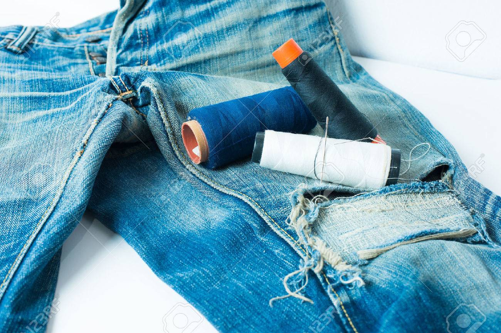

REPAIR

Ordinary household caused most of the problems facced by the environment including ourselves.
Private household account 30-40% of all environmeental impact.
A monstrous 60-70% of the world's vitality is utilized by home electrical
products as indicated by the US Department of Energy and most of this
percentage is encouraged by the usage of refrigerators, and air conditioner.
The rest of the rate is taken by items that are basicly entertainment
items and audio equipment such as radio.

In our daily life, many clothes and shoes with rips or holes are disposed
of rather than donated, but with a little DIY or expert skill, there could
be many more wears left in your faves.
-Learn to sew a button on by hand, fix a fallen hem, or patch a rip
in your pants.
Watch a tutorial online, or take a course at a community sewing hub to
learn your way around a sewing machine.
-Why hide your repairs? Take up visible mending;
it’s a way to turn holes in sweaters and rips in pants into beautiful
and colourful stitching embellishments. Not your speed? Sew a premade
embroidery patch over it.
You can even design your own!If your shoes are leather, or your garment
needs professional help, cobblers and tailors can be your wardrobe’s new
best friend.
Cost savings for business and consumers as a reusable product is often
cheaper than the many single use products it replaces.